Probability & Statistics
확률과 통계 웹앱
확률 실험, 조건부확률, 분포 형성 과정을 직접 조작하며 확인합니다.
확률
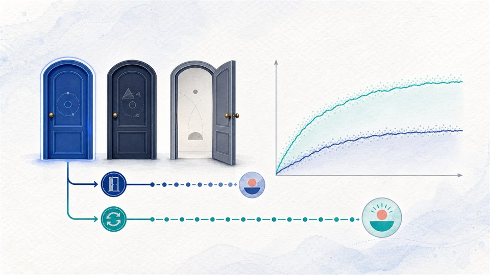
몬티홀 문제
선택 유지와 선택 변경의 성공 확률 차이를 누적 실험으로 확인합니다.
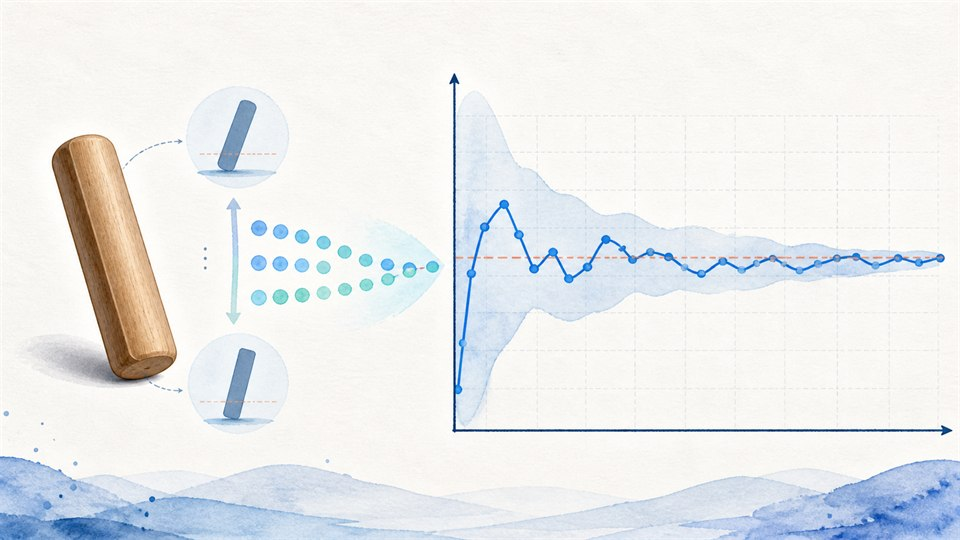
윷 1개 통계적 확률 탐구
윷 1개를 반복해 던지며 상대도수가 이론 확률에 수렴하는 과정을 확인합니다.
통계
이항분포
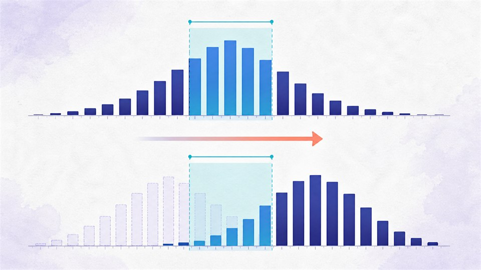
이항분포의 고정 범위 확률
같은 범위 폭에서 p가 달라지면 확률이 어떻게 변하는지 막대그래프와 비교 표로 확인합니다.
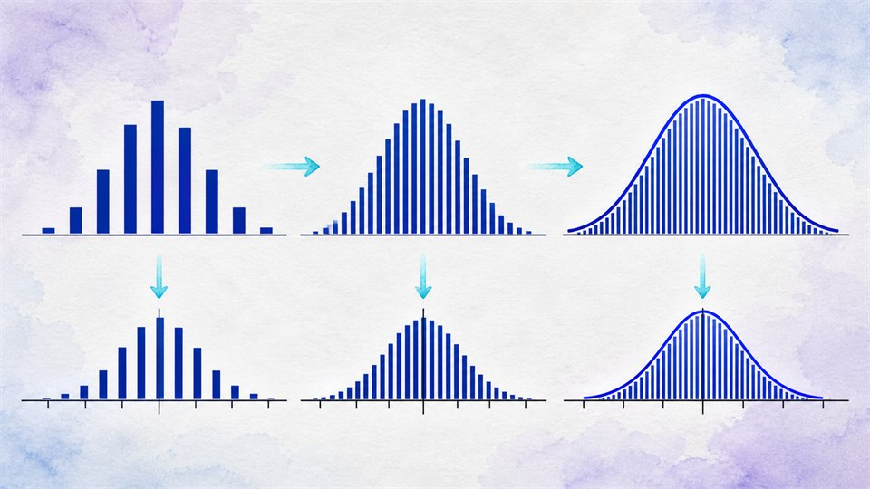
이항분포에서 정규분포로
시행 횟수 n이 커질수록 이항분포의 표준화된 막대가 정규곡선에 가까워지는 과정을 확인합니다.
정규분포
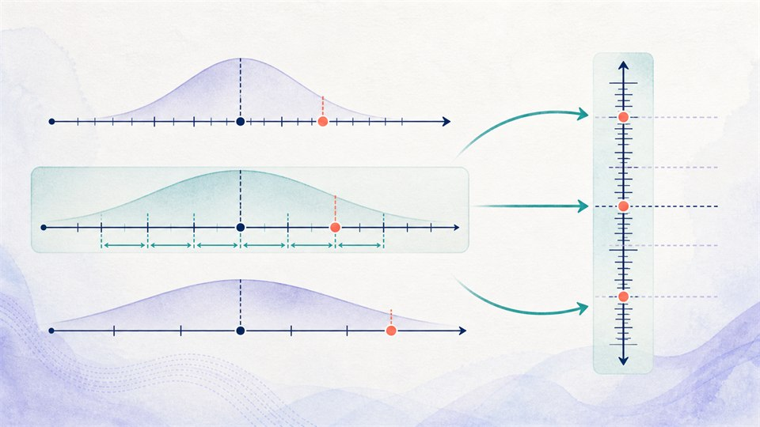
표준점수와 T점수
원점수가 올랐을 때 상대적 위치도 올랐는지 평균과 표준편차 눈금으로 비교합니다.
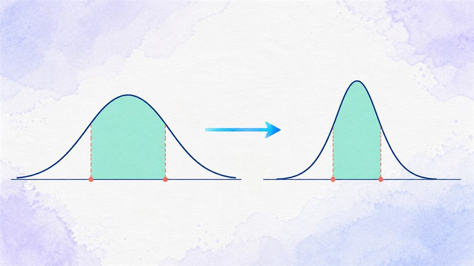
정규분포 확률의 표준화
정규분포의 구간을 표준정규분포의 같은 확률 구간으로 바꾸어 확인합니다.
통계적 추정
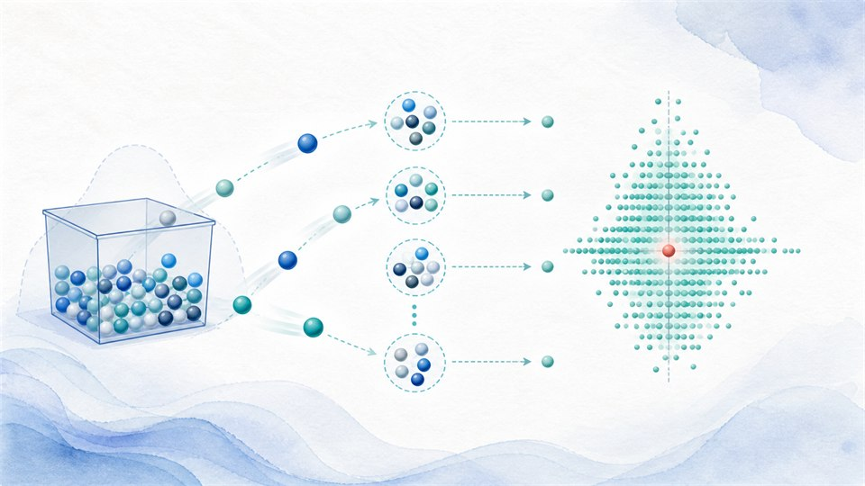
상자에서 뽑는 표본평균
번호 공을 뽑아 표본평균 하나가 만들어지고 기록되는 과정을 애니메이션으로 확인합니다.
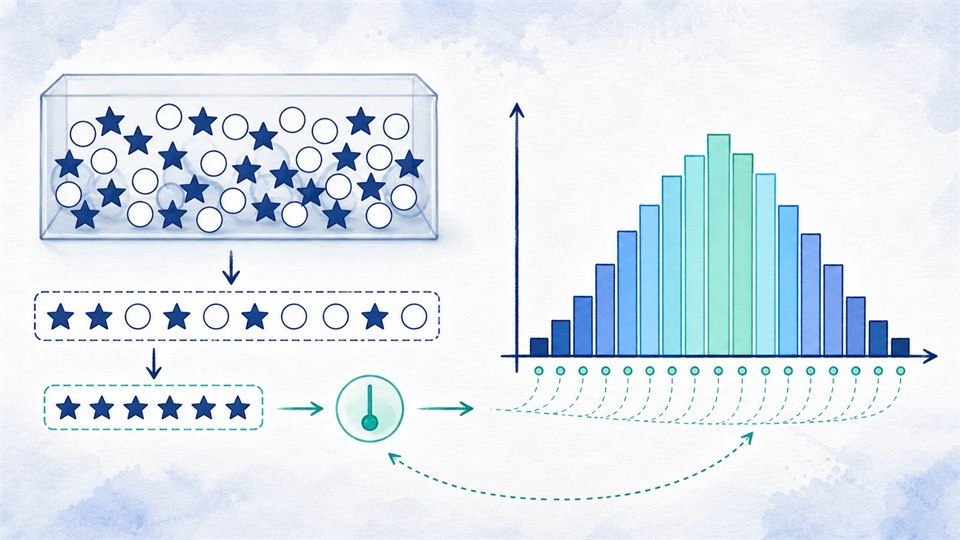
상자에서 뽑는 표본비율
성공을 1, 실패를 0으로 둔 표본평균이 표본비율이며, 성공 횟수의 이항분포와 어떻게 연결되는지 확인합니다.
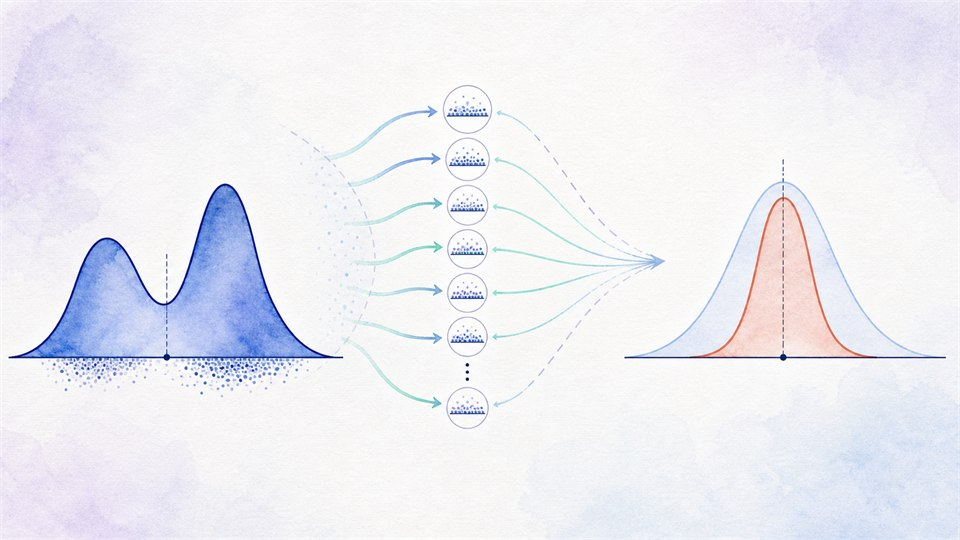
표본평균의 분포 실험실
표본을 반복 추출하며 표본평균의 분포가 형성되는 과정과 중심극한정리를 직접 확인합니다.
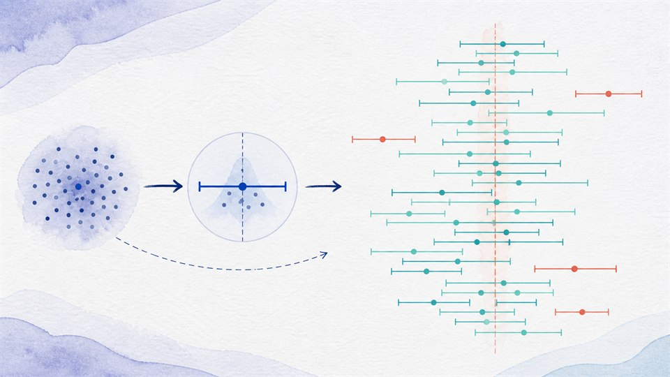
표본으로 모평균 추정하기
표본 하나로 신뢰구간을 만들고, 반복 실험을 통해 신뢰수준이 장기적 포함 비율임을 확인합니다.
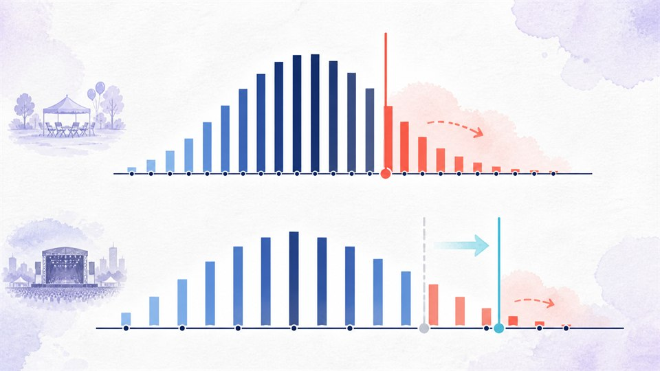
표본비율과 행사 준비 실험실
모비율만큼 준비하면 약 40%의 행사에서 준비가 부족합니다. 표본비율의 흔들림과 준비 부족 확률을 시뮬레이션으로 확인합니다.
종합 탐구
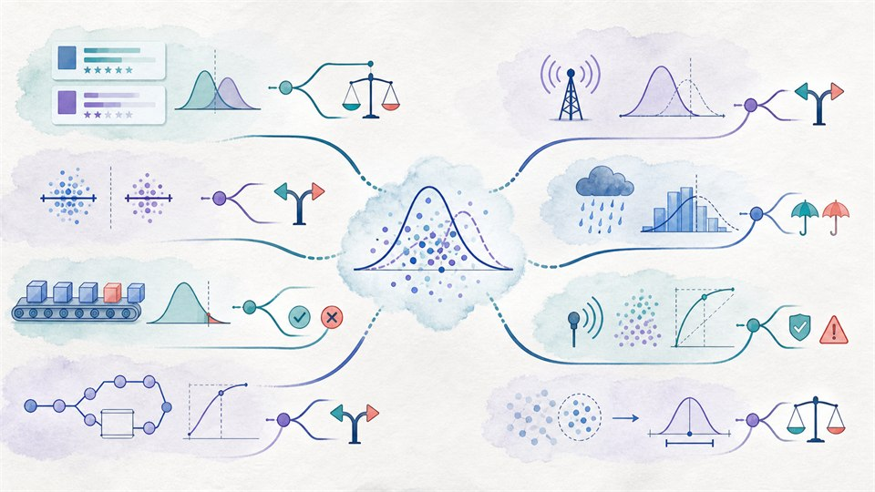
통계적 의사결정 실험실
상품추천, 센서 경보, 행사 준비처럼 확률·분포·표본이 실제 판단에 쓰이는 상황을 웹앱으로 탐구합니다.